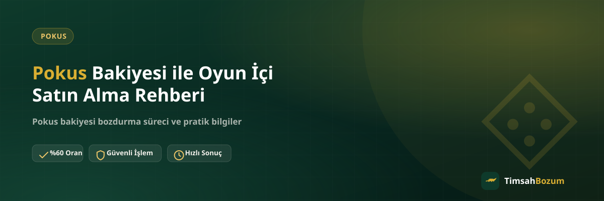

Pokus bakiyesi olan pek çok kullanıcı aynı soruyla karşılaşıyor: bu bakiyeyi oyun içinde harcamak mı daha mantıklı, yoksa nakde çevirmek mi? İki seçeneğin de kendine göre avantajları var ve doğru karar, oyunu ne kadar aktif kullandığına ve o anki ihtiyacına göre değişiyor. Bu yazıda oyun içi satın alma ile Pokus bakiyesi bozdurma arasındaki farkı, her iki yolun nasıl işlediğini ve karar verirken nelere dikkat etmen gerektiğini anlatıyoruz.
Pokus Bakiyesi Oyun İçinde Nasıl Kullanılır?
Pokus bakiyesi, desteklenen oyunlarda karakter kozmetiği, oyun içi para birimi, özel paket veya diğer dijital içerikleri satın almak için kullanılıyor. Bakiyeni oyun hesabına bağladığında, o hesaptaki mağaza üzerinden doğrudan harcama yapabiliyorsun. Bu süreç tamamen oyunun kendi sistemine ait; TimsahBozum'un oyun içi satın alma işlemiyle bir ilgisi yok, biz yalnızca bakiyeni nakde çevirmek istediğinde devreye giriyoruz.
Bakiyeyi oyun içinde harcamaya karar verdiğinde bu işlem geri alınamaz; harcanan bakiye içeriğe dönüştüğü için bir daha bozdurma işlemine konu olmaz. Bu yüzden karar vermeden önce hangi yolu seçeceğini netleştirmek, ileride pişmanlık yaşamamak açısından önemli.
Oyun İçi Satın Alma mı, Bozdurma mı Daha Mantıklı?
Bu sorunun tek bir doğru cevabı yok, çünkü durum kişiden kişiye değişiyor. Oyunu düzenli oynuyorsan ve bakiyeyi değerlendirecek bir içerik varsa, oyun içi satın alma mantıklı bir seçenek olabilir. Ama oyunu artık oynamıyorsan, hesabı pasif durumdaysa veya bakiyeyi başka bir ihtiyacın için nakde çevirmek istiyorsan, bozdurma seçeneği daha pratik bir çözüm sunuyor.
Bazı kullanıcılar hediye olarak gelen veya promosyon yoluyla kazandığı bir Pokus bakiyesini hiç kullanmayı planlamadığı bir oyun için elinde tutuyor. Böyle durumlarda bakiyeyi beklemek yerine değerlendirmek, elindeki tutarı atıl bırakmamanın bir yolu.
Pokus Bakiyesini Bozdurmak Güvenilir mi?
Evet. Pokus bozdurma süreci boyunca hesabına hiçbir şekilde erişim istenmiyor; işlem sadece güncel bakiyeni gösteren bir ekran görüntüsü üzerinden ilerliyor. Resmi WhatsApp hattımız (+90 543 887 21 71) dışında başka bir numara veya platformdan gelen taleplere bilgi paylaşmamak, güvenliğin ilk kuralı. Kullanıcı adı, şifre veya SMS doğrulama kodu hiçbir aşamada istenmez; böyle bir talep gelirse bu dolandırıcılık şüphesi olarak değerlendirilmeli.
Bakiyemin Bir Kısmını Oyunda Kullanıp Kalanını Bozdurabilir miyim?
Evet, bu mümkün. Pokus bakiye tabanlı bir hizmet olduğu için kısmi bozum yapılabiliyor; bakiyenin tamamını bozdurmak zorunda değilsin. Örneğin bir kısmını oyun içi bir içerik için ayırıp kalan tutarı nakde çevirebilirsin. Bu esneklik, Razer Gold veya iTunes gibi kod tabanlı hizmetlerden farklı; o hizmetlerde kodun tam değeri tek seferde bozduruluyor, kısmi bozum söz konusu değil.
Pokus Bakiyesi Bozdurma İşlemi Ne Kadar Sürer?
Süreç; WhatsApp'tan yazman, bakiye ekran görüntünü paylaşman, güncel oranı teyit etmen ve onay sonrası ödemenin WhatsApp üzerinden görüşülen yöntemle yapılmasıyla ilerliyor. İşlemin tam olarak ne kadar süreceği talep yoğunluğuna göre değişebilir; güncel bilgiyi işlem öncesi WhatsApp'tan teyit etmen en doğrusu. Üyelik, form doldurma veya kimlik belgesi istenmediği için süreç gereksiz adımlarla uzamıyor.
Bozdurma Kararını Verdikten Sonra Fikrimi Değiştirebilir miyim?
Evet, oranı teyit etmek herhangi bir taahhüt oluşturmuyor. Güncel oranı öğrendikten sonra işlemi yapmak istemezsen, bakiyeni kullanmadan süreç orada sonlanır ve istediğin zaman oyun içi satın alma seçeneğine dönebilirsin. Asıl dikkat etmen gereken nokta, bakiyeyi oyunda harcadıktan sonra bu kararın geri dönüşü olmadığı; bozdurma kararını bakiyeyi harcamadan önce vermen gerekiyor.
Hangi Durumda Bozdurmayı Tercih Etmeliyim?
Oyunu artık aktif oynamıyorsan, hesabın farklı bir platformda ve bakiyeyi orada değerlendiremiyorsan veya elindeki tutarı başka bir ihtiyaç için nakde çevirmek istiyorsan bozdurma mantıklı bir seçenek. Özellikle hediye olarak gelen ve senin tercih etmediğin bir oyuna bağlı bakiyelerde, bu bakiyeyi değerlendirmenin en pratik yolu bozdurmaktan geçiyor.
Bozdurmaya Karar Verdiysen Hangi Bilgileri Hazırlamalısın?
Oyun içi satın alma yerine bozdurmayı tercih ettiysen, işlemi hızlandırmak için önceden hazırlayabileceğin birkaç şey var. En önemlisi, bakiyenin güncel tutarını net şekilde gösteren bir ekran görüntüsü; tutar ve varsa tarih bilgisinin okunaklı olması yeterli. Hesabına ait kullanıcı adı, şifre veya başka bir kişisel bilgi paylaşman istenmiyor, çünkü işlem bu bilgilere ihtiyaç duymuyor.
Bozdurmak istediğin tutarı da baştan netleştirmen faydalı olur; bakiyenin tamamını mı yoksa bir kısmını mı değerlendirmek istediğini ilk mesajında belirtmen, karşılıklı soru-cevap turlarını azaltır. Örneğin "Pokus bakiyemin bir kısmını bozdurmak istiyorum" gibi net bir ifadeyle başlamak, süreci oyun içi satın alma seçeneğiyle karıştırmadan doğrudan bozdurma talebine yönlendirir.
Birden Fazla Oyuna Bağlı Pokus Bakiyem Varsa Ne Yapmalıyım?
Farklı oyunlara bağlı birden fazla Pokus bakiyen varsa, hangisini oyunda değerlendirip hangisini bozduracağına tek tek karar vermen gerekir. Aktif oynadığın bir oyuna bağlı bakiyeyi içerik satın almak için tutman, buna karşılık kullanmadığın bir oyuna bağlı bakiyeyi bozdurman mantıklı bir yaklaşım olabilir. Birden fazla bakiyeyi aynı anda bozdurmak istersen, bunları tek bir mesajda toplu şekilde belirtmen süreci daha da hızlandırır.
Kararını verdiğinde güncel Pokus bozdurma oranını teyit etmek için WhatsApp hattımızdan yazabilirsin. Hizmet detayları için Pokus bozdurma sayfamıza da göz atabilirsin.
İlgili Yazılar
- Pokus Bakiyesi Nedir, Nasıl Oluşur?
- Pokus Bakiyesi Kısmi Olarak Bozdurulabilir mi?
- Pokus Bozdururken Hesabıma Erişim Veriyor muyum?
Özetle, Pokus bakiyeni oyun içinde harcamak ile bozdurmak arasında tek doğru cevap yok; seçim tamamen oyunu kullanma durumuna ve anlık ihtiyacına bağlı. Bakiyeni nakde çevirmek istersen güncel oranı teyit etmek ve işlemini başlatmak için resmi WhatsApp hattımızdan yazman yeterli.